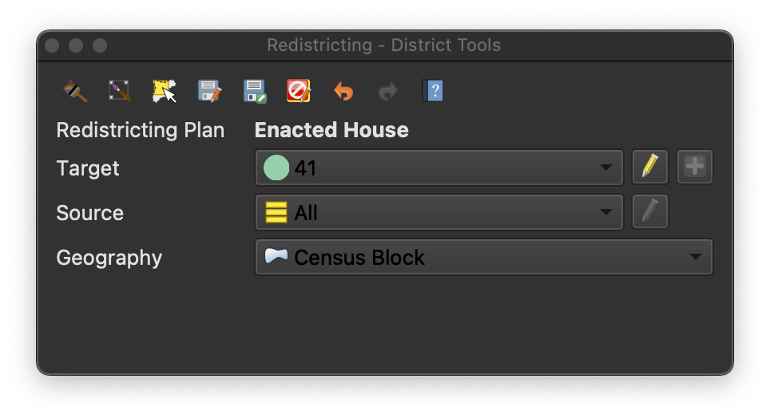
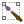

Creating Your Districts¶
Redistricting plans are created using the tools available in the redistricting Toolbox.
The redistricting Toolbox offers the following district creation tools in the toolbar at the top of the districting toolbox window.
Activate the paint by geography function. When active, clicking on the map will assign units of geography to the selected destination district. |
|
 |
Activate the paint by selection function. Use the mouse to assign all geographic units within the selection rectangle to the selected destination district. |
Select features by geography. Use this tool to select, but not assign to a district, features corresponding the chosen unit of geography. |
Below the toolbar, the Toolbox displays the name of the currently active plan.
When one of the the district painting functions is active, geographic units
will be assigned to the district specified in the Target dropdown. If not
all districts have been allocated, selecting New District will open the
“Create New District” dialog. To remove geographic units from a district, set
the target to Unassigned.
Use the Source dropdown to limit which units are assigned to the target
district. When All is selected, all geographic units matching the
selection criteria will be assigned to the target district, even if they are
already assigned to another district. If Unassigned is selected as the
source, only geographic units not currently assigned to another district will
be assigned to the target. Selecting a specific district as the source will
reassign units currently assigned to that district to the target district.
Use the Geography dropdown to select which units of geography you wish to
assign to the target district as you paint. The units specified during plan
creation will appear in the list.
As you paint your districts, you can see the impact of your changes in the
Pending Changes Window. When you are happy with the changes, click Save to
save your changes to the layer. If you wish to abandon your changes and
revert your plan to its previous state, click Rollback . The Undo
 and Redo buttons can be used to revert or reapply your changes
while editing.
and Redo buttons can be used to revert or reapply your changes
while editing.